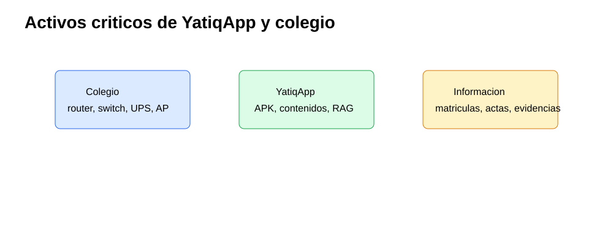
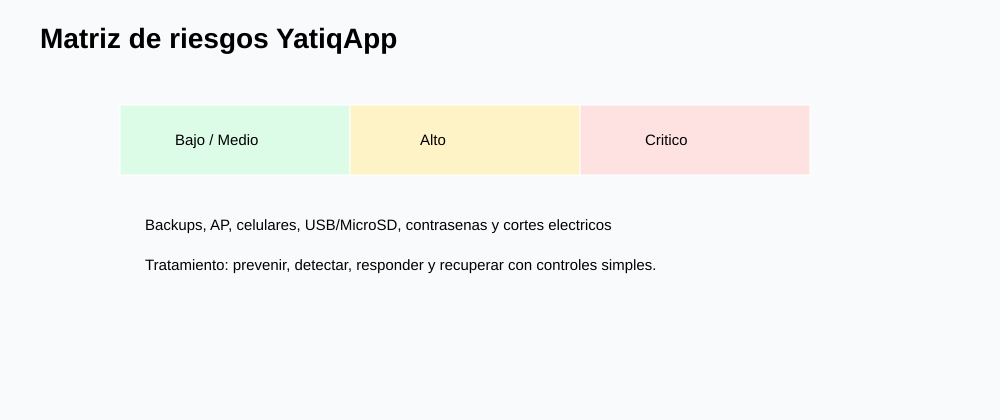
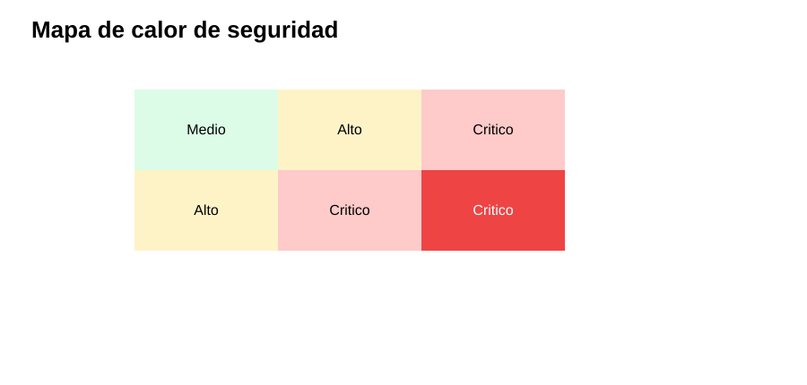
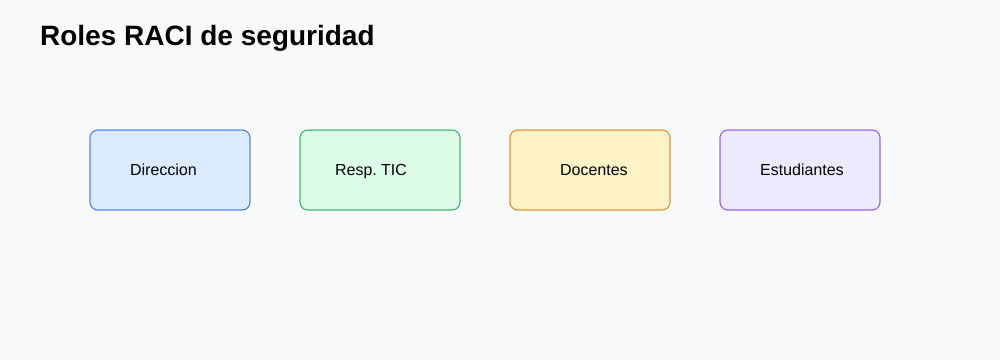
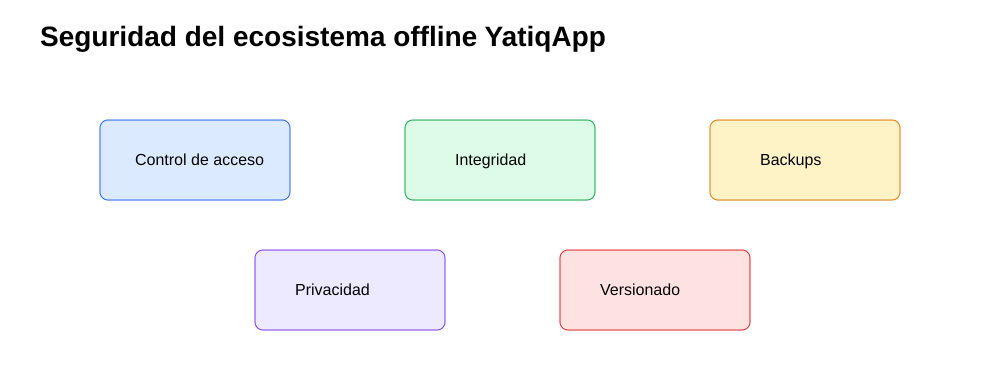

CE0321 - Entregable 2: Planificación de Seguridad
| Campo | Detalle |
|---|---|
| Universidad | Universidad Peruana Unión |
| Escuela Profesional | Ingeniería de Sistemas |
| Asignatura | Perfil de Egreso 2026 |
| Línea | CE03 Infraestructura Tecnológica |
| Proyecto | YatiqApp |
| Caso de estudio | I.E. Agropecuario Sorapa |
| Entregable | CE0321 - Entregable 2: Planificación de Seguridad |
| Código de competencia | CE0321 |
| Responsable | Anyelo Jhans Sarmiento Larico |
| Semestre | 2026-I |
| Fecha | Julio de 2026 |

| Información | Detalle |
|---|---|
| Institución | I.E. Agropecuario Sorapa |
| Distrito | Juli |
| Provincia | Chucuito |
| Región | Puno |
| Gestión | Pública |
| Nivel | Secundaria |
| Área | Rural |
| Estudiantes | 32 aprox. |
| Docentes | 9 aprox. |
| Secciones | 5 aprox. |
Descripción
Este documento planifica la seguridad de la infraestructura tecnológica de soporte para YatiqApp en la I.E. Agropecuario Sorapa. El enfoque protege activos del colegio y activos propios del ecosistema offline: APK, contenidos Quechua, Aymara y castellano, recursos RAG, modelos optimizados para distribución, manuales, evidencias y backups.
Resumen Ejecutivo
La seguridad propuesta se basa en ISO/IEC 27001, ISO/IEC 27002, ISO/IEC 27005, NIST Cybersecurity Framework, Ley N.º 29733 y Código de Ética ACM. La solución es proporcional a una institución rural: contraseñas robustas, control de acceso, VLAN, firewall básico, verificación de integridad, backup, protección de USB/MicroSD, registros y responsabilidades claras.
El servidor local no ejecuta IA. Solo almacena y distribuye recursos para que los celulares Android usen YatiqApp offline. La seguridad debe conservar integridad de la APK, privacidad de estudiantes, trazabilidad de versiones y disponibilidad de contenidos educativos bilingües.
Alcance del Entregable
Incluye
- Infraestructura de soporte para YatiqApp.
- Red local y micro centro de datos.
- Servidor local, seguridad, backup y distribución offline.
- Protección de activos educativos y administrativos.
- Operación rural con controles sostenibles.
No incluye
- Desarrollo completo de la app móvil.
- Entrenamiento completo del modelo IA.
- Inferencia cloud.
- Ejecución de IA en el servidor.
- Integración directa con SIAGIE.
- Despliegue nacional.
Supuestos
- El colegio cuenta con conectividad limitada o intermitente.
- Los estudiantes y docentes pueden usar celulares Android.
- YatiqApp funciona offline.
- El servidor local funciona como repositorio.
- Internet se usa solo de forma eventual.
Restricciones
- Presupuesto limitado.
- Hardware básico.
- Energía eléctrica variable.
- Pocos equipos tecnológicos.
- Contexto rural.
Identificación y Clasificación de Activos Críticos
| Grupo | Activos |
|---|---|
| Colegio | Router, switch, servidor local, disco externo, UPS, access point, documentación institucional, matrículas, actas e inventario. |
| YatiqApp | APK, contenidos Quechua, contenidos Aymara, contenidos castellano, modelos optimizados para distribución, base RAG, manuales docentes, evidencias del piloto, backups y dispositivos móviles. |

| Activo | Clasificación | Confidencialidad | Integridad | Disponibilidad |
|---|---|---|---|---|
| Matrículas y actas | Información sensible | Alta | Alta | Media |
| APK de YatiqApp | Software educativo | Media | Alta | Alta |
| Contenidos Quechua/Aymara/Castellano | Recurso educativo | Media | Alta | Alta |
| Recursos RAG | Base de conocimiento | Media | Alta | Alta |
| Modelos optimizados para distribución | Paquete técnico | Media | Alta | Media |
| Servidor local | Infraestructura | Alta | Alta | Alta |
| Disco externo | Respaldo | Alta | Alta | Media |
| Celulares Android | Dispositivo usuario | Media | Media | Alta |
Análisis de Riesgos ISO 27005 / NIST
| Riesgo | Activo afectado | Amenaza | Vulnerabilidad | Impacto | Probabilidad | Nivel | Control existente | Mejora propuesta | Responsable |
|---|---|---|---|---|---|---|---|---|---|
| Pérdida de APK actualizada | APK | Eliminación accidental | Sin control de versiones | Alto | Media | Alto | Copia local | Repositorio por versiones y checksum | Responsable TIC |
| Corrupción de contenidos | Contenidos | Copia incompleta | Sin verificación | Alto | Media | Alto | Carpetas locales | Hash y validación docente | Responsable TIC |
| Pérdida de backup | Disco externo | Extravio | Custodia informal | Alto | Media | Alto | Disco disponible | Bitácora y almacenamiento bajo llave | Dirección |
| Acceso no autorizado al servidor | Servidor | Credenciales robadas | Contraseña débil | Alto | Media | Alto | Usuario local | Mínimo privilegio y cambio periódico | Responsable TIC |
| Fallo de AP durante distribución | AP | Falla técnica | Equipo único por zona | Medio | Media | Medio | AP instalado | Prueba previa y AP alterno | Responsable TIC |
| Celular no compatible | Dispositivos móviles | Limitación técnica | Android antiguo | Medio | Media | Medio | Prueba manual | Lista de requisitos mínimos | Docente encargado |
| Falta de almacenamiento en celulares | Celulares | Espacio insuficiente | Sin revisión previa | Medio | Alta | Alto | Aviso verbal | Checklist antes de instalación | Docentes |
| Malware en USB/MicroSD | Servidor/celulares | Archivo infectado | Medios sin control | Alto | Media | Alto | Antivirus básico | Escaneo y medios autorizados | Responsable TIC |
| Uso de versión antigua | APK | Desactualización | Sin trazabilidad | Medio | Alta | Alto | Nombre de archivo | Registro de versión instalada | Docentes |
| Modificación no autorizada de recursos | Contenidos | Manipulación | Permisos amplios | Alto | Media | Alto | Carpeta compartida | Permisos de solo lectura y aprobación | Dirección |
| Robo del servidor | Servidor | Hurto | Acceso físico débil | Alto | Baja | Medio | Ambiente cerrado | Rack/puerta con llave e inventario | Dirección |
| Corte eléctrico | Router/switch/servidor | Interrupción | Energía variable | Alto | Alta | Crítico | UPS | Apagado seguro y revisión mensual | Responsable TIC |
| Falla del disco externo | Backups | Daño físico | Un solo medio | Alto | Media | Alto | Disco externo | Segundo ciclo de copia y prueba de restauración | Dirección |
| Eliminación accidental | Recursos | Error humano | Sin permisos finos | Medio | Media | Medio | Carpetas | Papelera, backup y permisos por rol | Responsable TIC |
| Contraseña débil | Servidor/AP/router | Acceso indebido | Claves simples | Alto | Alta | Crítico | Claves locales | Política de 10+ caracteres y cambio semestral | Dirección |


Políticas de Seguridad
| Política | Aplicación | Responsable |
|---|---|---|
| Control de accesos | Usuarios diferenciados en servidor, router y AP. | Responsable TIC |
| Contraseñas | Claves robustas, no compartidas y cambio semestral. | Dirección |
| Backup | Copia semanal de contenidos, evidencias y documentos. | Responsable TIC |
| Uso de USB/MicroSD | Solo medios autorizados y escaneados. | Docentes y TIC |
| Integridad de APK | Validar versión, fecha y checksum. | Responsable TIC |
| Privacidad | Minimizar datos estudiantiles y proteger evidencias. | Dirección |
| Versionado | Carpetas por versión para APK, RAG y contenidos. | Responsable TIC |
| Wi-Fi | SSID separados y contraseña por grupo. | Responsable TIC |
Roles y Responsabilidades
| Actividad | Dirección | Responsable TIC | Docentes | Estudiantes |
|---|---|---|---|---|
| Aprobar políticas | A | C | I | I |
| Administrar servidor | A | R | I | I |
| Validar contenidos | C | C | R | I |
| Distribuir APK | I | R | R | C |
| Ejecutar backups | A | R | C | I |
| Reportar incidentes | A | R | R | R |

Seguridad del Ecosistema Offline de YatiqApp
La protección del ecosistema offline se centra en conservar recursos educativos, controlar versiones y evitar manipulación no autorizada. El servidor local mantiene carpetas de APK, contenidos, modelos, RAG, manuales, evidencias, backups y actualizaciones. Los docentes descargan o copian paquetes validados por Wi-Fi local, USB o MicroSD autorizada.
Los contenidos Quechua y Aymara requieren respeto cultural, trazabilidad de cambios y validación docente. La APK debe conservar integridad mediante nombre de versión, fecha, responsable y checksum. Los backups deben guardarse en disco externo y probarse de manera periódica. Los datos estudiantiles deben minimizarse y no exponerse en carpetas públicas.

Ética ACM
La seguridad debe proteger a estudiantes y comunidad educativa. Según ACM, las decisiones técnicas deben evitar daño, respetar privacidad, ser honestas sobre limitaciones y reconocer el impacto social. En Sorapa, esto implica no manipular información educativa, no exponer datos de menores, respetar contenidos Quechua y Aymara, usar credenciales responsablemente y proponer controles sostenibles para una escuela rural.
Conclusiones
- La seguridad CE03 debe proteger infraestructura, contenidos y operación offline.
- El servidor local es repositorio, no motor de IA.
- La integridad de APK y contenidos es crítica para evitar versiones incorrectas.
- Los riesgos más altos son corte eléctrico, contraseña débil y pérdida de backup.
- El uso de USB/MicroSD exige controles por malware e integridad.
- La privacidad estudiantil requiere minimización y control de evidencias.
- El versionado facilita mantenimiento y auditoría escolar.
- La ética ACM aporta criterios de respeto cultural y responsabilidad social.
Recomendaciones
- Implementar bitácora de versiones para APK, contenidos y RAG.
- Verificar checksum antes de distribuir paquetes.
- Guardar backups bajo llave y probar restauración.
- Separar permisos de lectura y escritura en el repositorio.
- Escanear USB/MicroSD antes de copiar archivos.
- Cambiar claves Wi-Fi y de servidor de forma semestral.
- Capacitar a docentes sobre privacidad y uso responsable.
- Documentar incidentes, correcciones y responsables.
Anexos
| Anexo | Recurso | Relación |
|---|---|---|
| A | Controles del ecosistema offline. | |
| B | Priorización de riesgos. | |
| C | Clasificación de activos. | |
| D | Vista de criticidad. | |
| E | Responsabilidades. |
Referencias
Association for Computing Machinery. (2018). ACM code of ethics and professional conduct. ACM.
Congreso de la República del Perú. (2011). Ley N.º 29733, Ley de Protección de Datos Personales.
International Organization for Standardization. (2022). ISO/IEC 27001:2022 Information security management systems. ISO.
International Organization for Standardization. (2022). ISO/IEC 27002:2022 Information security controls. ISO.
International Organization for Standardization. (2022). ISO/IEC 27005:2022 Guidance on managing information security risks. ISO.
National Institute of Standards and Technology. (2024). The NIST cybersecurity framework 2.0. U.S. Department of Commerce.
Rúbrica de Evaluación
| Criterio Oficial | Evidencia en el Entregable | Nivel | Justificación |
|---|---|---|---|
| Identificación de activos | Activos del colegio y de YatiqApp clasificados. | Excelente | Incluye información, hardware, software, repositorio y móviles. |
| Análisis de riesgos | Matriz con 15 riesgos y controles. | Excelente | Usa criterios ISO/NIST y riesgos propios del modo offline. |
| Políticas de seguridad | Políticas de acceso, backup, USB, privacidad y versionado. | Excelente | Son aplicables con hardware básico de colegio rural. |
| Ética profesional | Sección ACM aplicada a estudiantes y lenguas originarias. | Excelente | Vincula técnica, privacidad, cultura e impacto social. |